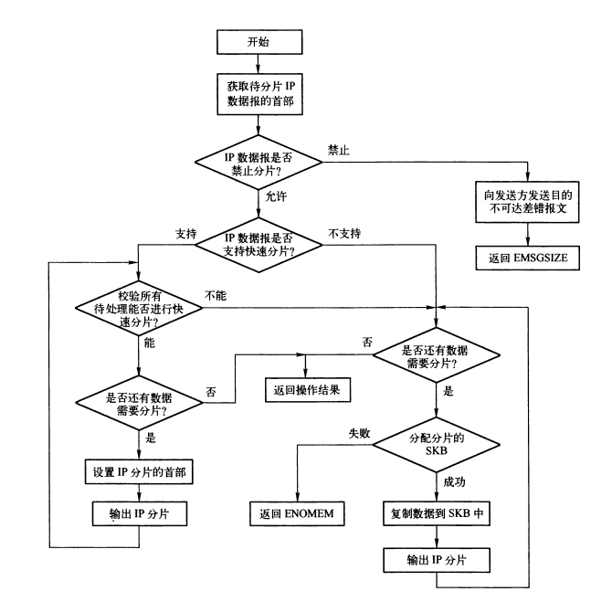
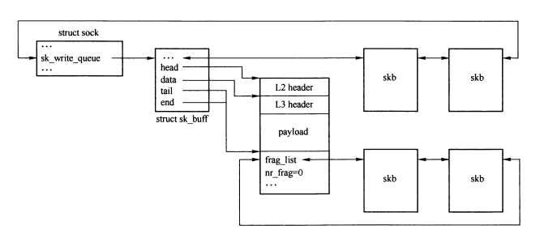
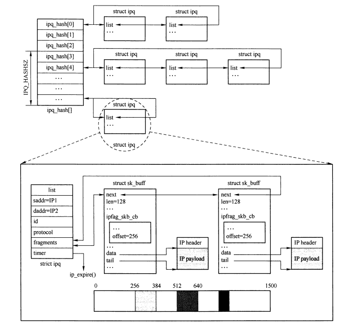
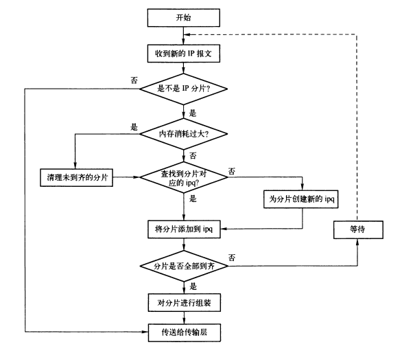

IP: 分片与组装
Table of Contents
如果IP数据报长度超出最大传输单元MTU，并且允许分片时，就需要进行IP分片处理。 以太网MTU为1500B，通常UDP协议发送的数据报容易导致IP分片，而TCP协议通常不会产生分片。
IP数据报分片后，独立选择路由，在所有分片达到目的主机后，目的主机IP层会先将其组装为完整的IP数据报，在交给传输层处理。
1. 系统参数
- ipfrag_high_thresh 用于组装IP数据报的内存上限值， 如果组装时超过该值，则调用ip_evictor()进行垃圾回收。
- ipfrag_low_thresh 用于组装IP数据报的内存下限值，调用ip_evictor()进行垃圾回收时，下降到该值时，停止垃圾回首。
- ipfrag_max_dist 允许接收来自同一个源IP地址的IP分片数量的上限值（防止DoS攻击）
- ipfrag_secret_interval 定时重组ipq散列表的时间间隔，默认600s。
- ipfrag_time 待组装IP分片在内存中允许保留的时间，默认30s。
2. 分片
ip_finish_output()将数据报（包括本地发送的数据报和转发的数据报）发送之前，会检测SKB缓存区数据长度，如果超出设备MTU，且符合分片条件，则调用ip_fragment()对数据报进行分片，否则调用ip_finish_output2() 输出。
分片过程需要将网络层的有效负载根据MTU分为一个一个的片段，对每个分片设置IP首部，更新IP校验和等。
分片分两种处理方式：
- 快速分片： 此时数据分割为片段的工作已经由传输层完成，网络层只需要将片段组成IP分片。
- 慢速分片： 慢速分片需要对完整的IP数据报进行分片。

Figure 1: ip_fragment()流程

Figure 2: 快速分片之前，SKB的缓存区
/* * This IP datagram is too large to be sent in one piece. Break it up into * smaller pieces (each of size equal to IP header plus * a block of the data of the original IP data part) that will yet fit in a * single device frame, and queue such a frame for sending. */ int ip_fragment(struct sk_buff *skb, int (*output)(struct sk_buff*)/* ipv4中为ip_finish_output2()*/) { struct iphdr *iph; int raw = 0; int ptr; struct net_device *dev; struct sk_buff *skb2; unsigned int mtu, hlen, left, len, ll_rs, pad; int offset; __be16 not_last_frag; struct rtable *rt = (struct rtable*)skb->dst; int err = 0; dev = rt->u.dst.dev; /* * Point into the IP datagram header. */ iph = skb->nh.iph; if (unlikely((iph->frag_off & htons(IP_DF)) && !skb->local_df)) {//禁止分片 IP_INC_STATS(IPSTATS_MIB_FRAGFAILS); //发送无法分片的目的不可达ICMP报文 icmp_send(skb, ICMP_DEST_UNREACH, ICMP_FRAG_NEEDED, htonl(dst_mtu(&rt->u.dst))); kfree_skb(skb); return -EMSGSIZE; } /* * Setup starting values. */ hlen = iph->ihl * 4; //数据报首部长度 mtu = dst_mtu(&rt->u.dst) - hlen; /* 去除IP首部后的MTU值*/ IPCB(skb)->flags |= IPSKB_FRAG_COMPLETE; /* When frag_list is given, use it. First, check its validity: * some transformers could create wrong frag_list or break existing * one, it is not prohibited. In this case fall back to copying. * * LATER: this step can be merged to real generation of fragments, * we can switch to copy when see the first bad fragment. */ if (skb_shinfo(skb)->frag_list) { //表示传输层已经将数据分块，走快速分片逻辑 struct sk_buff *frag; int first_len = skb_pagelen(skb); //获取SKB的第一个分片的数据总长度，包括SG类型聚合分散I/O数据 //以下情况都不能走快速分片 if (first_len - hlen > mtu || //分片长度大于MTU ((first_len - hlen) & 7) || //首个分片没有8字节对齐 (iph->frag_off & htons(IP_MF|IP_OFFSET)) || //有这两个标志，表示不是完成IP数据报 skb_cloned(skb)) //SKB被克隆 goto slow_path; //遍历后续分片 for (frag = skb_shinfo(skb)->frag_list; frag; frag = frag->next) { /* Correct geometry. */ if (frag->len > mtu || //分片大于MTU ((frag->len & 7) && frag->next) || //没有8字节对齐且不是最后一个分片 skb_headroom(frag) < hlen) //该分片没有为二层首部预留足够空间 goto slow_path; /* Partially cloned skb? */ if (skb_shared(frag)) //分片被克隆 goto slow_path; BUG_ON(frag->sk); if (skb->sk) { //存在传输控制块 sock_hold(skb->sk); frag->sk = skb->sk; //为分片的传输控制块赋值 frag->destructor = sock_wfree; //释放该分片skb 的回调 skb->truesize -= frag->truesize; //修改首个skb的缓存区总长度 } } /* Everything is OK. Generate! */ err = 0; offset = 0; frag = skb_shinfo(skb)->frag_list; skb_shinfo(skb)->frag_list = NULL; skb->data_len = first_len - skb_headlen(skb); skb->len = first_len; iph->tot_len = htons(first_len); iph->frag_off = htons(IP_MF); ip_send_check(iph); for (;;) { /* Prepare header of the next frame, * before previous one went down. */ if (frag) {//根据首个分片（skb），初始化下一个分片的skb和IP首部 frag->ip_summed = CHECKSUM_NONE; frag->h.raw = frag->data; frag->nh.raw = __skb_push(frag, hlen); memcpy(frag->nh.raw, iph, hlen); iph = frag->nh.iph; iph->tot_len = htons(frag->len); ip_copy_metadata(frag, skb); /* 一些ip选项无需复制到后续分片，所以首次循环时，设置第二个分片的IP选项， 后续的分片直接拷贝上一个分片即可。 */ if (offset == 0) ip_options_fragment(frag); offset += skb->len - hlen; iph->frag_off = htons(offset>>3);//设置后一个分片的偏移 if (frag->next != NULL) iph->frag_off |= htons(IP_MF); /* Ready, complete checksum */ ip_send_check(iph); //校验和 } err = output(skb); //发送当前分片 if (!err) IP_INC_STATS(IPSTATS_MIB_FRAGCREATES); if (err || !frag) //有一个分片失败，则后续将不再发送 break; //处理下一个分片 skb = frag; frag = skb->next; skb->next = NULL; } if (err == 0) { IP_INC_STATS(IPSTATS_MIB_FRAGOKS); return 0; } while (frag) { skb = frag->next; kfree_skb(frag); frag = skb; } IP_INC_STATS(IPSTATS_MIB_FRAGFAILS); return err; } slow_path: left = skb->len - hlen; /*IP数据报的数据长度 */ ptr = raw + hlen; /* 数据区指针 */ /* 桥接中转发基于VLAN的ip数据报，则需要获取VLAN首部长度 */ pad = nf_bridge_pad(skb); ll_rs = LL_RESERVED_SPACE_EXTRA(rt->u.dst.dev, pad); mtu -= pad; /* * Fragment the datagram. */ offset = (ntohs(iph->frag_off) & IP_OFFSET) << 3; //首部中的分片偏移值 not_last_frag = iph->frag_off & htons(IP_MF); //取MF标志位位的值 /* * Keep copying data until we run out. */ while(left > 0) { //循环对left长度的数据进行分片 len = left; /* IF: it doesn't fit, use 'mtu' - the data space left */ if (len > mtu) //以mtu为分片长度 len = mtu; /* IF: we are not sending upto and including the packet end then align the next start on an eight byte boundary */ if (len < left) { //不是最后一个分片，则需要8字节对齐 len &= ~7; } /* * Allocate buffer. */ if ((skb2 = alloc_skb(len+hlen+ll_rs, GFP_ATOMIC)) == NULL) { NETDEBUG(KERN_INFO "IP: frag: no memory for new fragment!\n"); err = -ENOMEM; goto fail; } /* * Set up data on packet */ //填充新分配的SKB ip_copy_metadata(skb2, skb); skb_reserve(skb2, ll_rs); skb_put(skb2, len + hlen); skb2->nh.raw = skb2->data; skb2->h.raw = skb2->data + hlen; /* * Charge the memory for the fragment to any owner * it might possess */ if (skb->sk) skb_set_owner_w(skb2, skb->sk); /* 复制IP首部到SKB中 */ memcpy(skb2->nh.raw, skb->data, hlen); /* 复制IP分片数据 */ if (skb_copy_bits(skb, ptr, skb2->h.raw, len)) BUG(); left -= len; /* * Fill in the new header fields. */ iph = skb2->nh.iph; iph->frag_off = htons((offset >> 3)); //设置分片偏移字段 /* ANK: dirty, but effective trick. Upgrade options only if * the segment to be fragmented was THE FIRST (otherwise, * options are already fixed) and make it ONCE * on the initial skb, so that all the following fragments * will inherit fixed options. */ if (offset == 0) //一些选项只需要存在于首个分片中 ip_options_fragment(skb); /* * Added AC : If we are fragmenting a fragment that's not the * last fragment then keep MF on each bit */ if (left > 0 || not_last_frag) //非最后一个分片，需要设置IP_MF iph->frag_off |= htons(IP_MF); ptr += len; offset += len; /* * Put this fragment into the sending queue. */ iph->tot_len = htons(len + hlen); ip_send_check(iph); err = output(skb2); if (err) goto fail; IP_INC_STATS(IPSTATS_MIB_FRAGCREATES); } kfree_skb(skb); IP_INC_STATS(IPSTATS_MIB_FRAGOKS); return err; fail: kfree_skb(skb); IP_INC_STATS(IPSTATS_MIB_FRAGFAILS); return err; }
3. 组装
接收方在接收某个数据报的分片时，需要将该数据报所有分片组合后，才可以提交到上层协议。 通过 struct ipq 结构的实例来表示被组合的IP数据报。
3.1. ipq结构
为了能够高效的组装分片，ipq结构需要满足一下要求：
- 快速定位属于某一数据报的一组分片。
- 在属于某一数据报的一组分片中快速插入新的分片。
- 有效的判断一个数据报的分片是否已经全部接收。
- 具有组装超时机制，如果超时，则删除该数据报的所有内容。
/* Describe an entry in the "incomplete datagrams" queue. */ struct ipq { struct hlist_node list; //用于在ipq_hash散列表中连接为双向链表 /* 用于连接到全局的 ipq_lru_list 链表中。该链表用于垃圾回收，当IP组装模块消耗内存岛屿上限时，回收分片 */ struct list_head lru_list; /*标识分片来源 IP_DEFRAG_LOCAL_DELIVER 来自网络主机或者本地环回口的分片 IP_DEFRAG_CALL_RA_CHAIN 含有路由警告选项的IP分片 */ u32 user; __be32 saddr; __be32 daddr; __be16 id; u8 protocol; u8 last_in; //last_in 的取值 #define COMPLETE 4 //所有分片都已经达到 #define FIRST_IN 2 //第一个分片已经到达，第一个分片包含了所有的IP选项 #define LAST_IN 1 //最后一个分片已经到达，最后一个分片带有原始数据报的长度信息 struct sk_buff *fragments; /* 用于链接已经接收的分片 */ /* 当前已经收到的分片中，offset最大的分片加上其长度值，当收到最后一个分片时，该值代表原始数据报长度*/ int len; //已经收到的所有分片总长度 int meat; spinlock_t lock; atomic_t refcnt; struct timer_list timer; /* 组装超时定时器 */ struct timeval stamp; //最后一个分片到达的时间 int iif; //接收最后一个分片的网络设备索引号 unsigned int rid; //已接收分片计数器 struct inet_peer *peer; //记录发送方信息 };

Figure 3: ipq散列表
3.2. ipq散列表和链表的维护
- ipq_kill() 将组装定时器超时的ipq， 从ipq散列表及ipq_lry_list链表中删除，但是不释放。
- ipq_put() 用来释放ipq及分片。其中调用ip_frag_destroy()执行释放操作。
3.3. ipq散列表的重组
所有的分片重组都是通过ipq散列表进行。开始时ipq在散列表中的分布会比较均匀，但是一段时间后，经过不断的添加删除，ipq散列表中的ipq分布不再均匀，因此需要定时进行重组。
- ipfrag_init()
ipq散列表的定时重组通过ipfrag_secret_timer定时器实现，在ipfrag_init()中对ipfrag_secret_timer定时器初始化。
void ipfrag_init(void) { //用来和ip首部的源地址、目的地址等构成ipq散列表的关键字。每次重组时更新 ipfrag_hash_rnd = (u32) ((num_physpages ^ (num_physpages>>7)) ^ (jiffies ^ (jiffies >> 6))); init_timer(&ipfrag_secret_timer); ipfrag_secret_timer.function = ipfrag_secret_rebuild; ipfrag_secret_timer.expires = jiffies + sysctl_ipfrag_secret_interval; add_timer(&ipfrag_secret_timer); }
- ipfrag_secret_rebuild()
ipfrag_secret_rebuild()函数是ipfrag_secret_timer定时器的例程，用来重组ipq散列表。
static void ipfrag_secret_rebuild(unsigned long dummy) { unsigned long now = jiffies; int i; write_lock(&ipfrag_lock); get_random_bytes(&ipfrag_hash_rnd, sizeof(u32)); //更新ipfrag_hash_rnd for (i = 0; i < IPQ_HASHSZ; i++) {//遍历hash桶 struct ipq *q; struct hlist_node *p, *n; // hlist_for_each_entry_safe(q, p, n, &ipq_hash[i], list) { //遍历hash桶的链表 //重新计算hash值 unsigned int hval = ipqhashfn(q->id, q->saddr, q->daddr, q->protocol); if (hval != i) { hlist_del(&q->list); /* Relink to new hash chain. */ hlist_add_head(&q->list, &ipq_hash[hval]); } } } write_unlock(&ipfrag_lock); //重新设置定时器 mod_timer(&ipfrag_secret_timer, now + sysctl_ipfrag_secret_interval); }
3.4. IP分片超时
如果ip分片已经超时，并且数据报的分片还未全部抵达，则删除已经抵达的所有分片。
- ip_frag_create()
当接收到一个新的IP数据报的ip分片时，会创建对应的ipq，并初始化超时定时器。
/* Add an entry to the 'ipq' queue for a newly received IP datagram. */ static struct ipq *ip_frag_create(struct iphdr *iph, u32 user) { struct ipq *qp; if ((qp = frag_alloc_queue()) == NULL) goto out_nomem; qp->protocol = iph->protocol; qp->last_in = 0; qp->id = iph->id; qp->saddr = iph->saddr; qp->daddr = iph->daddr; qp->user = user; qp->len = 0; qp->meat = 0; qp->fragments = NULL; qp->iif = 0; qp->peer = sysctl_ipfrag_max_dist ? inet_getpeer(iph->saddr, 1) : NULL; /* 初始化超时定时器 */ init_timer(&qp->timer); qp->timer.data = (unsigned long) qp; /* pointer to queue */ qp->timer.function = ip_expire; /* 定时器的超时例程 */ spin_lock_init(&qp->lock); atomic_set(&qp->refcnt, 1); return ip_frag_intern(qp); out_nomem: LIMIT_NETDEBUG(KERN_ERR "ip_frag_create: no memory left !\n"); return NULL; }
- ip_expire()
ip_frag_create()中，将ip_expire()设置为超时的处理例程。
/* * Oops, a fragment queue timed out. Kill it and send an ICMP reply. */ static void ip_expire(unsigned long arg) { struct ipq *qp = (struct ipq *) arg; spin_lock(&qp->lock); if (qp->last_in & COMPLETE) //COMPLETE状态，则不用处理 goto out; ipq_kill(qp); //从ipq散列表及ipq_lru_list链表中删除 IP_INC_STATS_BH(IPSTATS_MIB_REASMTIMEOUT); IP_INC_STATS_BH(IPSTATS_MIB_REASMFAILS); if ((qp->last_in&FIRST_IN) && qp->fragments != NULL) { //首个分片已经到达 struct sk_buff *head = qp->fragments; /* 发送 “分片组装超时” 的ICMP 消息. */ if ((head->dev = dev_get_by_index(qp->iif)) != NULL) { icmp_send(head, ICMP_TIME_EXCEEDED, ICMP_EXC_FRAGTIME, 0); dev_put(head->dev); } } out: spin_unlock(&qp->lock); ipq_put(qp, NULL); //释放ipq及其所有分片 }
3.5. 垃圾回收
全局变量 ip_frag_mem 保存了ipq散列表占用的内存。
有两个阈值用于控制IP分片组装所占用的内存：ipfrag_high_thresh和ipfrag_low_thresh。 当ip_frag_mem大于ipfrag_high_thresh时，调用ip_evictor进行清理，直到 ip_frag_mem 小于 ipfrag_low_thresh 。
/* Memory limiting on fragments. Evictor trashes the oldest * fragment queue until we are back under the threshold. */ static void ip_evictor(void) { struct ipq *qp; struct list_head *tmp; int work; //计算需要清理的数量。 work = atomic_read(&ip_frag_mem) - sysctl_ipfrag_low_thresh; if (work <= 0) return; while (work > 0) { read_lock(&ipfrag_lock); if (list_empty(&ipq_lru_list)) { read_unlock(&ipfrag_lock); return; } tmp = ipq_lru_list.next; qp = list_entry(tmp, struct ipq, lru_list); atomic_inc(&qp->refcnt); read_unlock(&ipfrag_lock); spin_lock(&qp->lock); if (!(qp->last_in&COMPLETE)) //分片还未到齐 ipq_kill(qp); spin_unlock(&qp->lock); ipq_put(qp, &work); //释放ipq及其所有分片 IP_INC_STATS_BH(IPSTATS_MIB_REASMFAILS); } }
3.6. 分片组装相关函数
- ip_find()，根据分片的ip首部及user标志，在ipq散列表中寻找对应的ipq，没有找到则创建新的ipq。
/* Find the correct entry in the "incomplete datagrams" queue for * this IP datagram, and create new one, if nothing is found. */ static inline struct ipq *ip_find(struct iphdr *iph, u32 user) { __be16 id = iph->id; __be32 saddr = iph->saddr; __be32 daddr = iph->daddr; __u8 protocol = iph->protocol; unsigned int hash; struct ipq *qp; struct hlist_node *n; read_lock(&ipfrag_lock); hash = ipqhashfn(id, saddr, daddr, protocol); //计算hash值 hlist_for_each_entry(qp, n, &ipq_hash[hash], list) { //遍历该桶的链表 if(qp->id == id && qp->saddr == saddr && qp->daddr == daddr && qp->protocol == protocol && qp->user == user) { atomic_inc(&qp->refcnt); read_unlock(&ipfrag_lock); return qp; //找到 } } read_unlock(&ipfrag_lock); //未找到，创建新的ipq return ip_frag_create(iph, user); }
- ip_frag_create()，创建ipq，并插入ipq散列表。
- ip_frag_intern()，将新创建的ipq插入ipq散列表和ipq_lru_list链表。
/* Creation primitives. */ static struct ipq *ip_frag_intern(struct ipq *qp_in) { struct ipq *qp; #ifdef CONFIG_SMP struct hlist_node *n; #endif unsigned int hash; write_lock(&ipfrag_lock); //计算hash值 hash = ipqhashfn(qp_in->id, qp_in->saddr, qp_in->daddr, qp_in->protocol); #ifdef CONFIG_SMP /* With SMP race we have to recheck hash table, because * such entry could be created on other cpu, while we * promoted read lock to write lock. */ hlist_for_each_entry(qp, n, &ipq_hash[hash], list) { //遍历该桶的链表 if(qp->id == qp_in->id && qp->saddr == qp_in->saddr && qp->daddr == qp_in->daddr && qp->protocol == qp_in->protocol && qp->user == qp_in->user) { //已经存在，则需要释放待插入的ipq atomic_inc(&qp->refcnt); write_unlock(&ipfrag_lock); qp_in->last_in |= COMPLETE; ipq_put(qp_in, NULL); return qp; } } #endif qp = qp_in; //安装组装定时器 if (!mod_timer(&qp->timer, jiffies + sysctl_ipfrag_time)) atomic_inc(&qp->refcnt); atomic_inc(&qp->refcnt); hlist_add_head(&qp->list, &ipq_hash[hash]); //添加到hash表 INIT_LIST_HEAD(&qp->lru_list); list_add_tail(&qp->lru_list, &ipq_lru_list); //添加到ipq_lru_list链表 ip_frag_nqueues++; write_unlock(&ipfrag_lock); return qp; }
- ip_frag_queue(), 将分片SKB添加到qb指定的ipq的分片链表。
/* Add new segment to existing queue. */ static void ip_frag_queue(struct ipq *qp, struct sk_buff *skb) { struct sk_buff *prev, *next; int flags, offset; int ihl, end; if (qp->last_in & COMPLETE) //表示已经全部接收 goto err; //检测是否受到Dos攻击 if (!(IPCB(skb)->flags & IPSKB_FRAG_COMPLETE) && unlikely(ip_frag_too_far(qp)) && unlikely(ip_frag_reinit(qp))) { ipq_kill(qp); goto err; } offset = ntohs(skb->nh.iph->frag_off); //取出分片偏移 flags = offset & ~IP_OFFSET; offset &= IP_OFFSET; offset <<= 3; /* 分片偏移代表8字节的倍数 */ ihl = skb->nh.iph->ihl * 4; //IP首部长度 /* 计算分片末尾处在原始数据包中的位置 */ end = offset + skb->len - ihl; if ((flags & IP_MF) == 0) { //没有IP_MF标志，则为最后一个分片 if (end < qp->len || //末尾位置小于原始数据包长度 ((qp->last_in & LAST_IN) && end != qp->len)) //已经有LAST_IN标志，但是末尾位置不等于原始数据包长度 goto err; qp->last_in |= LAST_IN; //设置LAST_IN标志 qp->len = end; //存储完整数据包长度 } else {//不是最后一个分片 if (end&7) { //没有8字节对齐 end &= ~7; //截断为8字节对齐 if (skb->ip_summed != CHECKSUM_UNNECESSARY) skb->ip_summed = CHECKSUM_NONE; //需要重新计算校验和 } if (end > qp->len) { //需要更新len字段 /* Some bits beyond end -> corruption. */ if (qp->last_in & LAST_IN) goto err; qp->len = end; } } if (end == offset) //相等代表分片数据区长度为0 goto err; //去掉IP首部 if (pskb_pull(skb, ihl) == NULL) goto err; if (pskb_trim_rcsum(skb, end-offset)) //调整SKB数据区长度 goto err; /* Find out which fragments are in front and at the back of us * in the chain of fragments so far. We must know where to put * this fragment, right? */ prev = NULL; for(next = qp->fragments; next != NULL; next = next->next) { //确定分片在链表中的位置 if (FRAG_CB(next)->offset >= offset) break; /* bingo! */ prev = next; } /* We found where to put this one. Check for overlap with * preceding fragment, and, if needed, align things so that * any overlaps are eliminated. */ if (prev) { //检测和上一个分片的数据是否重叠 int i = (FRAG_CB(prev)->offset + prev->len) - offset; if (i > 0) { offset += i; if (end <= offset) goto err; if (!pskb_pull(skb, i)) goto err; if (skb->ip_summed != CHECKSUM_UNNECESSARY) skb->ip_summed = CHECKSUM_NONE; } } while (next && FRAG_CB(next)->offset < end) { //检测是否和后一个分片的数据有重叠 int i = end - FRAG_CB(next)->offset; /* overlap is 'i' bytes */ if (i < next->len) { /* Eat head of the next overlapped fragment * and leave the loop. The next ones cannot overlap. */ if (!pskb_pull(next, i)) goto err; FRAG_CB(next)->offset += i; qp->meat -= i; if (next->ip_summed != CHECKSUM_UNNECESSARY) next->ip_summed = CHECKSUM_NONE; break; } else { struct sk_buff *free_it = next; /* Old fragment is completely overridden with * new one drop it. */ next = next->next; if (prev) prev->next = next; else qp->fragments = next; qp->meat -= free_it->len; frag_kfree_skb(free_it, NULL); } } FRAG_CB(skb)->offset = offset; //记录当前分片的偏移值 /* 将分片插入到对应位置 */ skb->next = next; if (prev) prev->next = skb; else qp->fragments = skb; if (skb->dev) qp->iif = skb->dev->ifindex; skb->dev = NULL; skb_get_timestamp(skb, &qp->stamp); //更新接收时间戳 qp->meat += skb->len; //更新ipq的总长度 atomic_add(skb->truesize, &ip_frag_mem); if (offset == 0) qp->last_in |= FIRST_IN; //首个分片，则设置FIRST_IN标志 write_lock(&ipfrag_lock); list_move_tail(&qp->lru_list, &ipq_lru_list); //调整ipq在 ipq_lru_list 中的位置。 write_unlock(&ipfrag_lock); return; err: kfree_skb(skb); }
- ip_frag_reasm()，用于组装已到齐的所有分片。
/* Build a new IP datagram from all its fragments. */ static struct sk_buff *ip_frag_reasm(struct ipq *qp, struct net_device *dev) { struct iphdr *iph; struct sk_buff *fp, *head = qp->fragments; int len; int ihlen; ipq_kill(qp); //从ipq散列表及ipq_lry_list中删除，并删除定时器 BUG_TRAP(head != NULL); BUG_TRAP(FRAG_CB(head)->offset == 0); /* Allocate a new buffer for the datagram. */ ihlen = head->nh.iph->ihl*4; len = ihlen + qp->len; if(len > 65535)//总长度超过64KB，则丢弃 goto out_oversize; /* 所有分片都会组装到第一个分片上，所以首个分片不能是克隆的。 如果是克隆的，则需要重新分配SKB */ if (skb_cloned(head) && pskb_expand_head(head, 0, 0, GFP_ATOMIC)) goto out_nomem; /* If the first fragment is fragmented itself, we split * it to two chunks: the first with data and paged part * and the second, holding only fragments. */ /* 分片队列的首个SKB不能既带有数据，有带有分片，即frag_list上不能有分片， 如果有则重新分配SKB。 最终效果是，head自身不包括数据，其frag_list上连接这所有分片的SKB。 */ if (skb_shinfo(head)->frag_list) { struct sk_buff *clone; int i, plen = 0; if ((clone = alloc_skb(0, GFP_ATOMIC)) == NULL) goto out_nomem; clone->next = head->next; head->next = clone; skb_shinfo(clone)->frag_list = skb_shinfo(head)->frag_list; skb_shinfo(head)->frag_list = NULL; for (i=0; i<skb_shinfo(head)->nr_frags; i++) plen += skb_shinfo(head)->frags[i].size; clone->len = clone->data_len = head->data_len - plen; head->data_len -= clone->len; head->len -= clone->len; clone->csum = 0; clone->ip_summed = head->ip_summed; atomic_add(clone->truesize, &ip_frag_mem); } //将所有分片连接到第一个SKB的frag_list上 skb_shinfo(head)->frag_list = head->next; skb_push(head, head->data - head->nh.raw); atomic_sub(head->truesize, &ip_frag_mem); //遍历所有分片，重新计算ip数据报长度、校验和等 for (fp=head->next; fp; fp = fp->next) { head->data_len += fp->len; head->len += fp->len; if (head->ip_summed != fp->ip_summed) head->ip_summed = CHECKSUM_NONE; else if (head->ip_summed == CHECKSUM_COMPLETE) head->csum = csum_add(head->csum, fp->csum); head->truesize += fp->truesize; atomic_sub(fp->truesize, &ip_frag_mem); } head->next = NULL; head->dev = dev; skb_set_timestamp(head, &qp->stamp); iph = head->nh.iph; //首部长度 iph->frag_off = 0; //分片偏移 iph->tot_len = htons(len); IP_INC_STATS_BH(IPSTATS_MIB_REASMOKS); qp->fragments = NULL; return head; out_nomem: LIMIT_NETDEBUG(KERN_ERR "IP: queue_glue: no memory for gluing " "queue %p\n", qp); goto out_fail; out_oversize: if (net_ratelimit()) printk(KERN_INFO "Oversized IP packet from %d.%d.%d.%d.\n", NIPQUAD(qp->saddr)); out_fail: IP_INC_STATS_BH(IPSTATS_MIB_REASMFAILS); return NULL; }
3.7. 分片组装
分片组装过程分为三步：
- 判断接收的IP数据报是否是分片，如果是，则需要组装。
- 计算键值，从ipq散列表中查找对应的ipq实例，并插入ipq的分片链表。
- 如果此时，该ipq所有分片到达，则组装为完成的IP数据报。

Figure 4: 分片组装流程
ip_defrag()用来进行分片组装。
/* Process an incoming IP datagram fragment. */ struct sk_buff *ip_defrag(struct sk_buff *skb, u32 user) { struct iphdr *iph = skb->nh.iph; struct ipq *qp; struct net_device *dev; IP_INC_STATS_BH(IPSTATS_MIB_REASMREQDS); /* ipq散列表消耗内存是否大于阈值 */ if (atomic_read(&ip_frag_mem) > sysctl_ipfrag_high_thresh) ip_evictor(); //执行清理操作 dev = skb->dev; /* 查找或者创建分片所属的ipq实例 */ if ((qp = ip_find(iph, user)) != NULL) { struct sk_buff *ret = NULL; spin_lock(&qp->lock); ip_frag_queue(qp, skb); //插入分片链表的适当位置 if (qp->last_in == (FIRST_IN|LAST_IN) && //首个分片和最后一个分片都已受到 qp->meat == qp->len) //已接收的分片总长度等于原始数据报长度 ret = ip_frag_reasm(qp, dev); //组装分片 spin_unlock(&qp->lock); ipq_put(qp, NULL); //删除ipq及其所有分片。 return ret; } IP_INC_STATS_BH(IPSTATS_MIB_REASMFAILS); kfree_skb(skb); return NULL; }